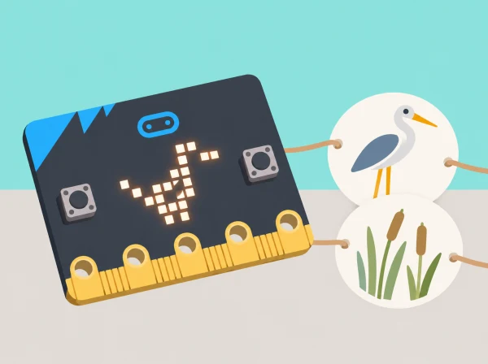
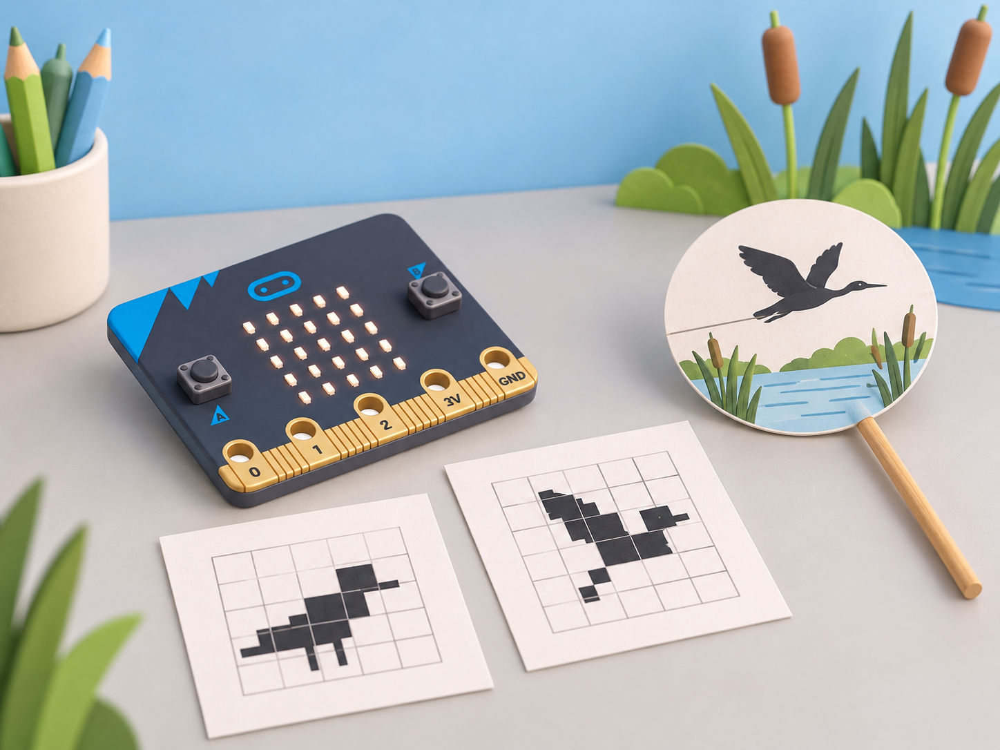

Animacions de l’aiguamoll
🏷️ Natura i expressió digital
🌱 Situació, repte i intenció
La unitat oficial té dues lliçons per a alumnat d’uns 7–9 anys: familiarització amb components i transferència de programa, icones predefinides i disseny LED píxel a píxel; després, taumàtrop, bucle continu, bucle comptat i avaluació. Aquesta seqüència conserva tots aquests objectius i els situa en un context valencià verificable.
🎯 Aprenentatges i vocabulari
- Abstraure un tret observable d’una planta o animal i representar-lo amb una icona de 5×5 píxels.
- Ordenar dos fotogrames per suggerir un moviment sense afirmar que la placa reprodueix el comportament real.
- Programar, provar i revisar una animació breu amb els blocs disponibles.
- Comunicar la decisió artística i distingir una observació pròpia d’una inferència sobre l’espècie.
🧰 Materials i preparació
BBC micro:bit física i cable USB o simulador MakeCode, ordinador/tauleta, projector opcional, graelles 5 × 5, llapis, paper, cartolina lleugera, llapis de colors, cinta i pal de cartó o dos llaços de paper per al taumàtrop. Prepareu una icona predefinida per analitzar, un projecte MakeCode inicial i targetes de seqüència desconnectada. Trieu imatges pròpies o amb ús autoritzat i fonts datades; la informació local es pot contrastar amb la guia pública de l’Albufera.
Si la identificació d’una espècie no està verificada, descriviu-la com a “au observada” o “planta de l’aiguamoll” i no li assigneu un nom científic.
Abans de començar, comproveu el procés de transferència USB del centre. La versió física i el simulador són alternatives per al mateix programa; anoteu quina s’ha utilitzat, perquè la transferència al dispositiu també és un objectiu de la primera lliçó.
📅 Seqüència didàctica
De la placa i el programa a una icona pròpia (50 min)
Fase 1 · Activem i prediem
Explorem components (8 min). Localitzeu matriu LED, botons A/B, pins, connector USB i control de reinici; associeu cada component a una funció d’entrada, eixida o connexió sense desmuntar la placa. Predicció (8 min). Ordeneu targetes «inici, mostra icona, pausa, mostra una altra imatge» i feu que una parella execute les ordres com si fora el dispositiu. Predigueu què passa si es canvia l’ordre.
Fase 2 · Explorem i construïm
Transferim un programa (8 min). Obriu un exemple a MakeCode, executeu-lo al simulador i, si hi ha placa, descarregueu-lo i transferiu-lo per USB. Compareu el que es veu en ambdós casos i registreu qualsevol diferència. Analitzem i creem (18 min). Mireu una icona integrada i determineu quines cel·les encén; en una graella 5 × 5, creeu una representació d’un tret —bec, ala, fulla o tija— amb un màxim de 25 píxels.
Passeu la graella a blocs LED individuals i preveieu el resultat abans d’executar.
Fase 3 · Expliquem i registrem
Anoteu les funcions dels components, l’ordre triat i la predicció de la icona. Deseu la graella i el programa transferit o simulat perquè es puga comparar el disseny amb l’eixida.
Fase 4 · Apliquem i millorem
Una parella intenta identificar el tret representat i proposa un píxel que es podria llevar o moure. L’equip modifica la icona només si pot explicar com el canvi ajuda a conservar el tret.
Fase 5 · Comprovem i reflexionem
Compareu la predicció amb la matriu i valoreu si el públic ha reconegut el tret.
Dos fotogrames, un moviment suggerit (50 min)
Fase 1 · Activem i prediem
Construïm i prediem (10 min). Dibuixeu en les dues cares d’un disc de cartolina una figura i un canvi menut —per exemple, una au quieta i l’au amb l’ala en una altra posició—. Alineeu el centre de les imatges abans d’enganxar el pal o les nanses de paper; proveu el gir lentament i anoteu quan costa llegir el canvi.

Fase 2 · Explorem i construïm
Storyboard LED (8 min). Representeu els dos fotogrames en dues graelles 5 × 5, numerant-los i descrivint què canvia; una altra persona comprova que la diferència siga llegible. Animació contínua (12 min). Programeu fotograma 1, pausa, fotograma 2 i pausa dins d’un bucle continu. Executeu-lo en simulador o placa, canvieu només el temps de pausa i compareu si encara es perceben els dos dibuixos. L’objectiu és fer comprensible la seqüència, no buscar el parpelleig més ràpid.
Animació comptada (10 min). Repetiu la parella de fotogrames un nombre fix de voltes amb un bucle de recompte; després, netegeu la matriu o mostreu una icona final i distingiu aquest comportament del bucle infinit.
Fase 3 · Expliquem i registrem
Registreu l’ordre dels fotogrames, el valor de pausa i el nombre de repeticions. Demaneu a un altre equip que descriga què ha canviat i anoteu una proposta concreta de millora.
Fase 4 · Apliquem i millorem
Reviseu una graella o el temps de pausa a partir del retorn. Torneu a executar tant el bucle continu com el comptat per comprovar que la modificació no ha alterat el nombre d’imatges ni el final previst.
Fase 5 · Comprovem i reflexionem
Compareu les representacions en paper i LED i registreu quina versió explica millor el moviment i per què.
🧪 Evidències i avaluació
Arxiveu el diagrama anotat de la placa, l’ordre d’instruccions, el nom del fitxer MakeCode, les dues graelles, la transferència o captura del simulador, el codi amb forever i el bucle comptat i les notes de coavaluació. Comproveu si l’alumnat (1) relaciona parts físiques amb les seues funcions; (2) prediu i executa una seqüència d’eixides LED; (3) diferencia repetició contínua i repetició limitada; (4) conserva un tret visual amb pocs píxels; i (5) proposa i prova una millora.
La icona no s’avalua com a identificació científica d’una espècie: s’avaluen decisions de disseny i explicació.
♿ Participació, accessibilitat i seguretat
Permeteu participar amb versió estàtica, simulador, graella impresa, dictat de píxels o rol de narració/observació. Aviseu abans de cada animació, oferiu no mirar-la i no feu servir ràfegues ràpides ni flaixos; la persona docent pot mostrar fotogrames estàtics en lloc de reproduir el bucle. Useu icones grans, alt contrast i suport oral per descriure quines cel·les canvien. Per a dificultats motores, les targetes 5 × 5 substitueixen la manipulació de blocs menuts sense llevar l’anàlisi de l’algorisme.
🔗 Referents i adaptació
Barefoot · Wildlife animations conté dues lliçons: la primera tracta components, seqüenciació en MakeCode, transferència, icones predefinides i imatges fetes amb LEDs individuals; la segona crea un taumàtrop, programa una animació amb bucle forever, en fa una altra amb repetició comptada i demana avaluar i suggerir millores. La fitxa manté aquesta cobertura i crea icones, storyboard i relat propis de l’aiguamoll. La font oficial diu que l’ús de placa física és preferible però admet simulador;
ací tots dos itineraris es declaren i es registren.